Laboratorio 4. Certificado personal
1. Introducción
En esta tarea, hay que crear un certificado personal desde el componente Kleopatra de la aplicación GPG 4 Win (crear un directorio donde almacenarlo). El certificado dispondrá de la disponibilidad de firmas y de cifrado.
2. Recursos necesarios
- En un equipo Windows: Instalar la App - GPG 4 Win
Si se tiene un equipo Linux, hay que instalar la herramienta GnuPG - PGP mediante el comando:
#sudo apt install pgpgpg
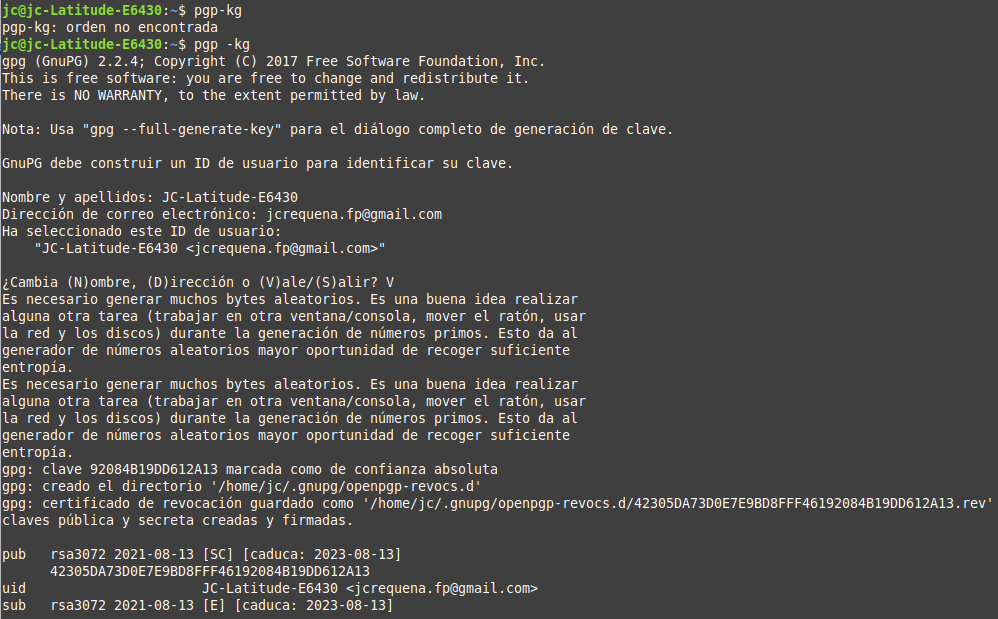
| 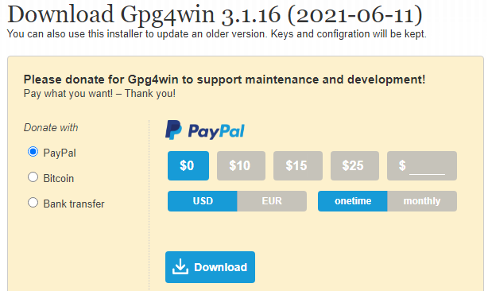 | 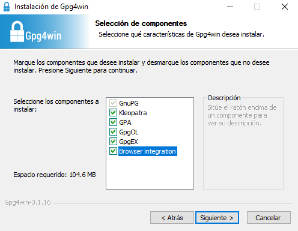 | 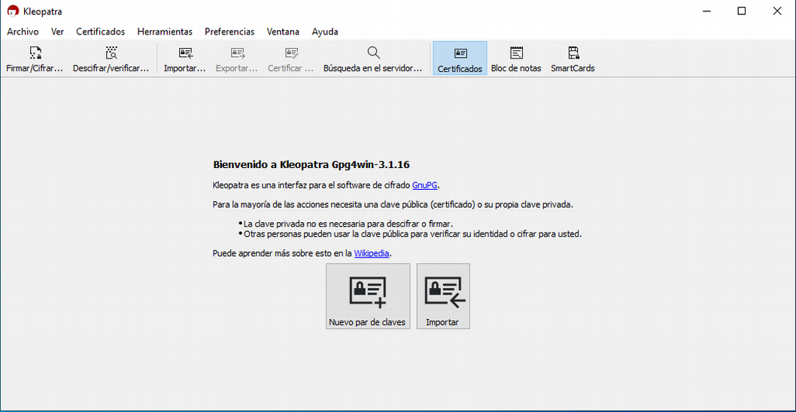 |
| Figura 1. Descarga de la aplicación. | Figura 2. Selección de componentes a instalar. | Figura 3. Inicio de Kleopatra. |
3. Trabajo a realizar
Una vez instalado Gpg4win, lo abrimos y pulsamos ‘Nuevo par de claves’ (creamos la pública y privada).
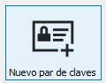
A continuación hay que rellenar la información personal que son opcionales y si se pulsa el botón 'Configuración avanzada', se tienen los detalles técnicos, es decir, algoritmo de cifrado, uso del certificado, etc. Para este caso, se rellena la información personal y los detalles técnicos que se pueden observar en la imagen inferior.
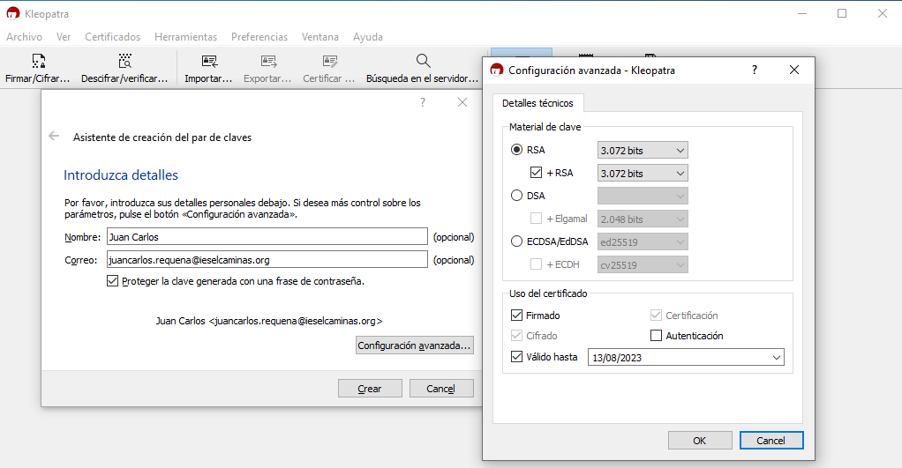
Figura 4. Asistente de creación de claves.
Para continuar, pulsamos 'Crear'. A continuación, hay que introducir la contraseña para proteger la clave. El asistente nos avisa en caso de introducir una contraseña de menos de 8 caracteres.
Pulsamos 'Ok' para seguir con el proceso y nos aparece una nueva ventana donde nos informa de que el par de claves se ha creado correctamente Figura 7). A continuación, hacemos la copia del par de claves (Figura 7), nos solicitará la contraseña (Figura 8) para poder hacer el copiado/exportación.
Para finalizar, hay que pulsar 'Finish'.
| 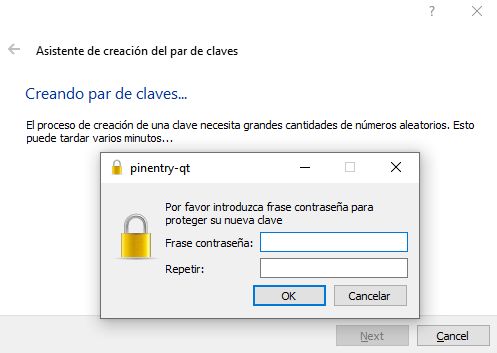 | 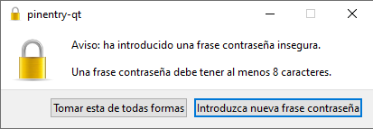 | 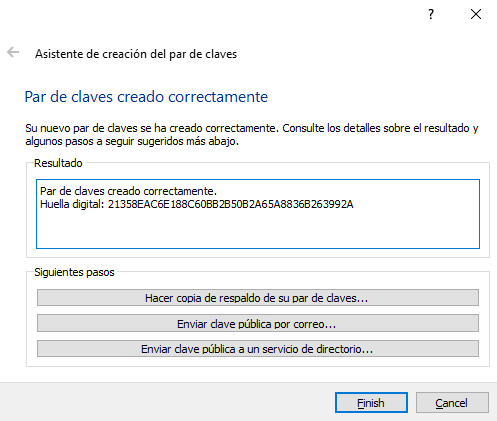 |
| Figura 5. Introducir la contraseña por duplicado. | Figura 6. Aviso de contraseña insegura. | Figura 7. Par de claves creado correctamente. |
| 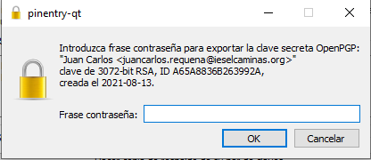 | 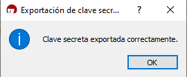 |
| Figura 8. Ingresar la contraseña. | Figura 9. Exportación de la clave correcta. |
Si accedemos al certificado que se acaba de crear, pulsando sobre él con el botón derecho del ratón, aparece un menú donde seleccionamos 'Detalles' .
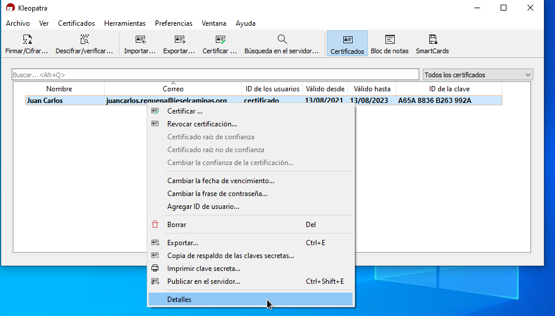
Figura 10. Menú de opciones del certificado creado.
En la nueva pantalla que aparece, se puede observar el periodo de validez, el tipo, etc. (Figura 11). Si pulsamos en 'Más detalles', vemos que hay una clave para firmar y otra para cifrar (Figura 12).
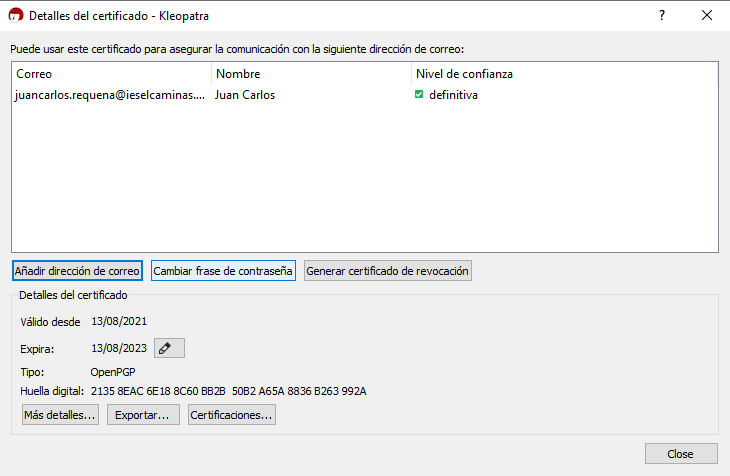
Figura 11. Detalles del certificado creado.
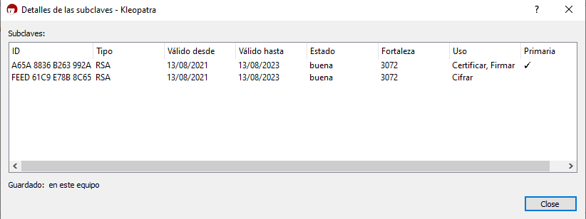
Figura 12. Más detalles del certificado creado.
Las acciones que se pueden realizar desde la pantalla de Detalles (Figura 11), son:
- Si pulsamos un ‘Generar un certificado de revocación’ lo eliminamos.
- Se podría modificar la fecha de expiración pulsando el lápiz (editar) que está al lado de la fecha.
- Podríamos cambiar el password que configuramos al inicio.
A continuación, se va a exportar la clave pública de ese certificado, ya que cuando se intercambie información con otros usuarios haciendo uso de certificados, se ha de proporcionar la clave pública para que el receptor pueda verificarnos y poder comunicarnos, es decir, cifrar y descifrar ficheros.
Para ello, seleccionamos el certificado y pulsamos el botón 'Exportar'. En la nueva ventana, hay que seleccionar el destino en disco donde se desea guardar la clave pública.
| 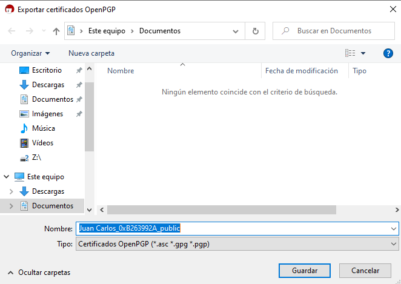 | 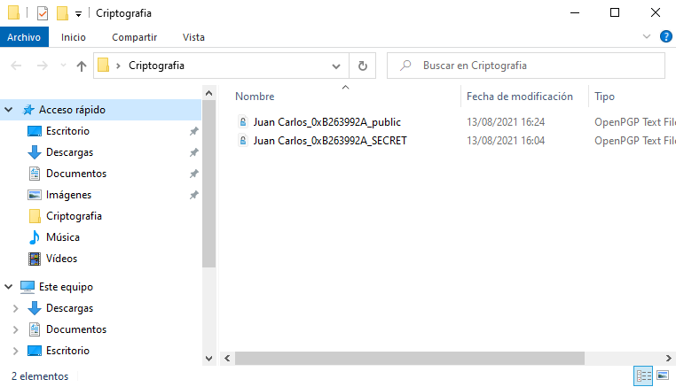 | 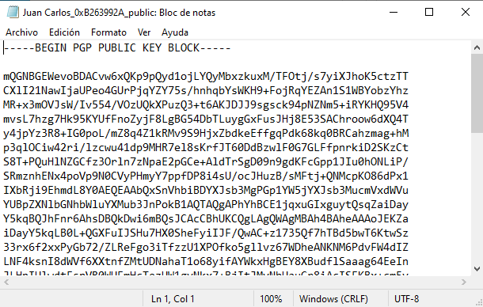 |
| Figura 13. Exportar clave pública. | Figura 14. Clave pública en el disco. | Figura 15.Contenido de la clave pública. |
3.1 Importar la clave pública de otro usuario
Para importar una clave pública de otro usuario, hay que pulsar el botón 'Importar' para incluir en nuestro sistema el certificado público de un usuario. Posteriormente, con nuestro certificado, validaremos o certificaremos ese certificado o clave pública.
| 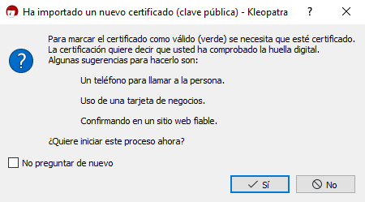 | |
| Figura 16. Importar certificado (calve pública) de un usuario. | |
A continuación, nos pide que validemos que el certificado es del usuario/persona que dice ser, para este caso, el usuario es JC-Latitude-E6430.
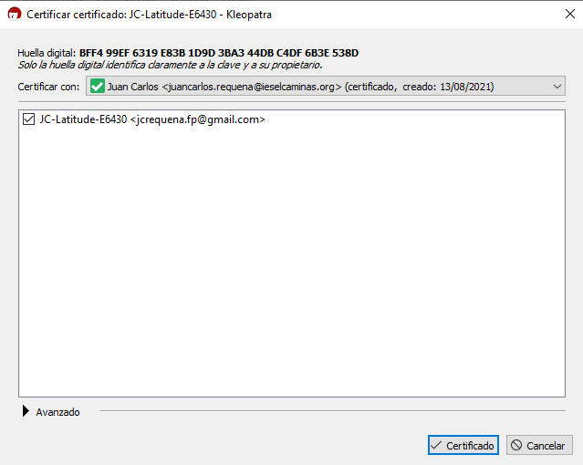
Figura 17. Validar el certificado del usuario.
Introducimos el password de nuestro certificado que usaremos para validar el certificado a importar, es decir, que es válido para introducirlo en nuestro sistema.
| 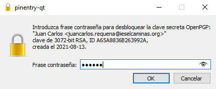 | 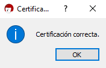 |
| Figura 18. Introducir la contraseña de la clave privada y mensaje de validación. | |
A continuación, en el panel central podemos observar que el certificado del usuario se ha importado correctamente
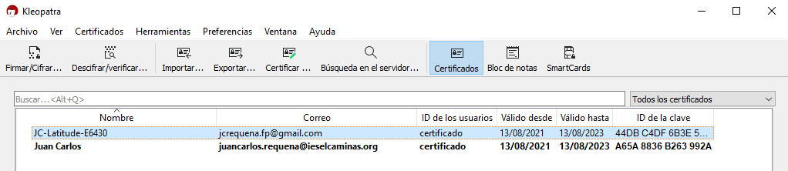
Figura 19. Certificados que se tienen.
3.2 Pruebas
Para probar los certificados, se va a cifrar un archivo para que los dos usuarios puedan visionarlo con sus claves.
Lo que se desea realizar es, cifrar un archivo en Kleopatra empleando el certificado que hemos generado anteriormente, empleando la clave pública del usuario JC-Latitude-E6430 para enviarle una archivo y que solo él puede leerlo. Para conseguirlo, se siguen los siguientes pasos:
1. Creamos un archivo sin cifrar.
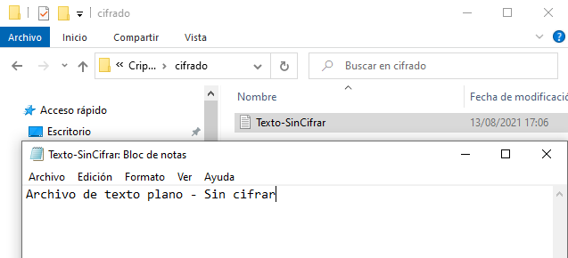
2. Seleccionamos del menú Archivo → Firmar/Cifrar
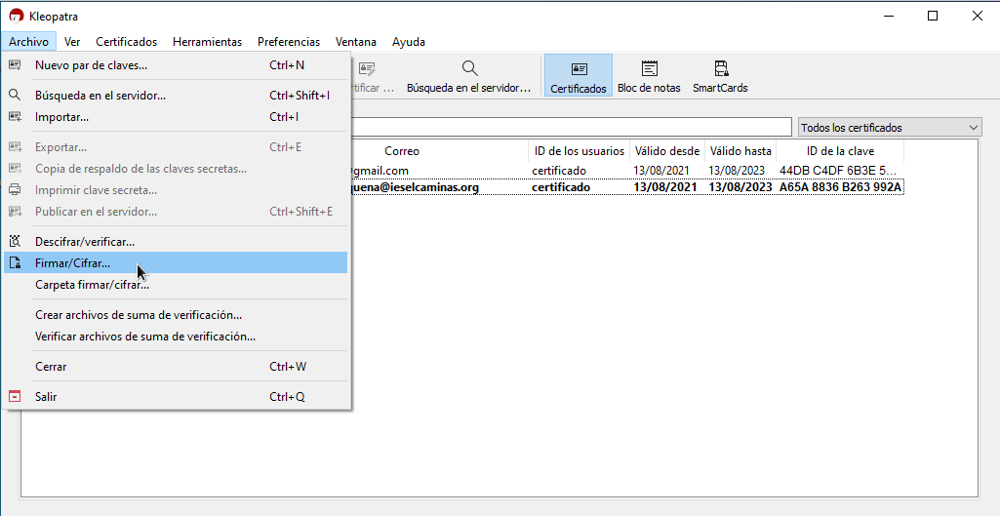
3. Selección de cifrado
Hay que seleccionar cifrar para mí y para otros (firmar no), es decir, el usuario JC-Latitude-E6430.
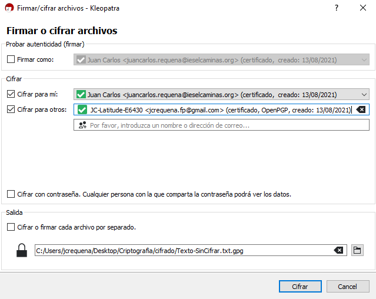
Hay que ingresar la contraseña siempre que se use la firma o el cifrado. Para continuar, hay que pulsar 'Cifrar' (ver imagen superior). A continuación, aparece una nueva ventana que nos informa que todo ha ido bien, y que ha generado un fichero: Texto-SinCifrar.txt.gpg (ver imagen inferior).
| 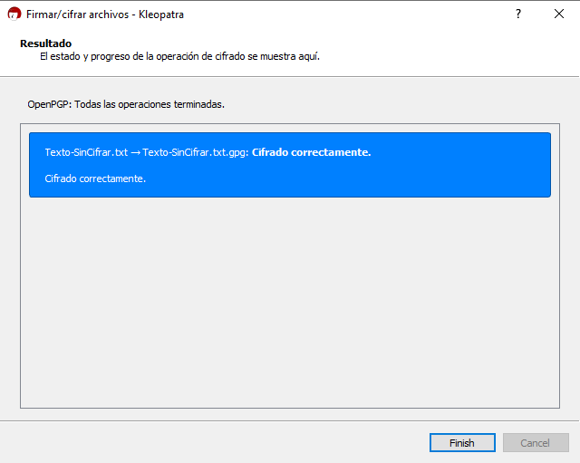 | 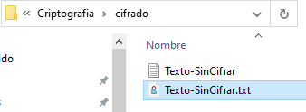 |
El fichero cifrado queda como se puede observar en la imagen inferior. Este fichero es el que enviaremos al usuario JC-Latitude-E6430.
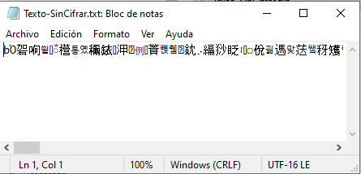
A continuación, simularemos que somos el usuario JC-Latitude-E6430 y con su clave pública, descifraremos el fichero para ver su contenido. Para ello, hay que importar la clave privada del usuario JC-Latitude-E6430 en Kleopatra para simular que el usuario está haciendo uso del componente Kleopatra donde tiene su clave pública y privada.
| 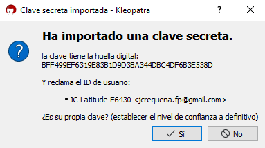 | 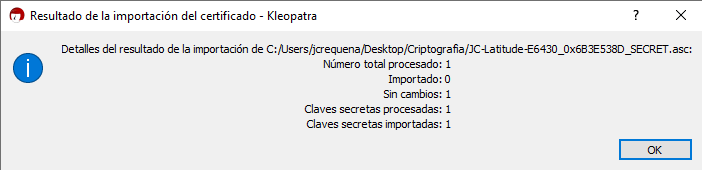 |
En estos momentos, si se observa el panel central, aparece en negrita el usuario JC-Latitude-E6430 ya que se ha importado su clave privada.
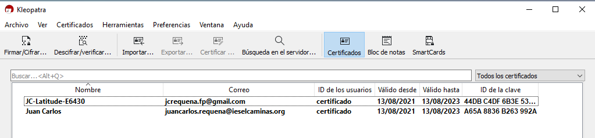
A continuación, se va a eliminar el fichero Texto-SinCifrar.txt para que al descifrar se genere.
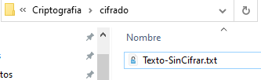
Una vez borrado el fichero, en el menú principal de la aplicación, hay que pulsar el botón Descifrar/Verificar donde seleccionamos el fichero cifrado y en ese momento, comienza el proceso de descifrado (Nos solicita la contraseña del usuario JC-Latitude-E6430 - ver figura inferior).
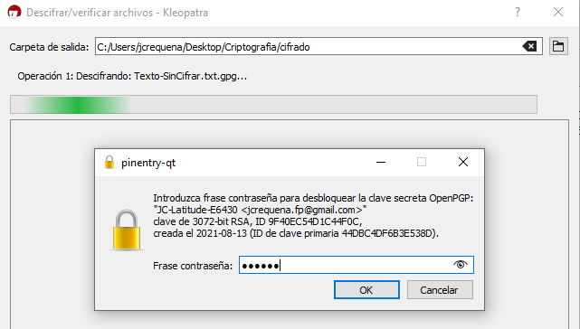
Una vez finaliza el proceso, nos dice que se ha descifrado correctamente y ya podremos guardar el fichero pulsando el botón 'Save-All'.
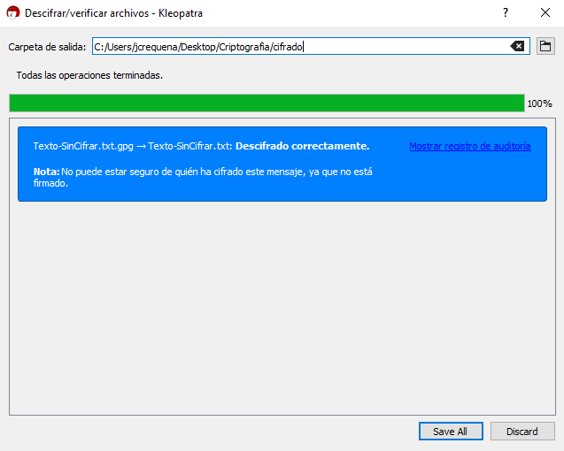
Si pulsamos 'Mostrar registro de auditoría' → Vemos las acciones realizadas en el proceso.
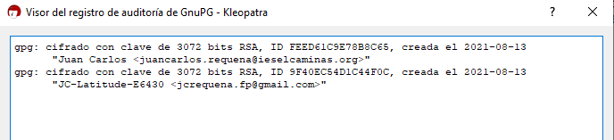
A continuación, abrimos el fichero que acabamos de guardar para ver su contenido.
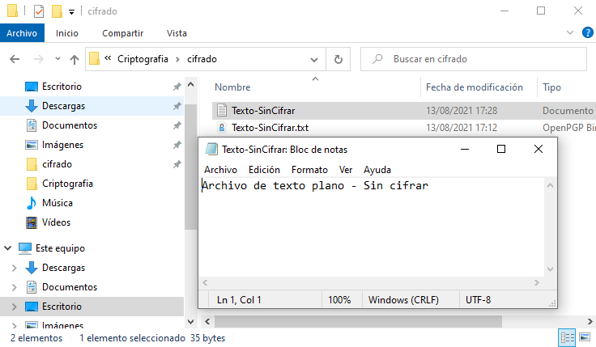
3.3 Firma
Otra de las opciones que se le ha dado a nuestro certificado al crearlo es la posibilidad de la firma (Firmar un archivo desde Kleopatra y obtener la firma asociada a un fichero). Para eso, se necesita el certificado que hemos creado y el fichero con la firma.
En el menú: Opción Firmar/Cifrar → Seleccionamos el fichero.
| 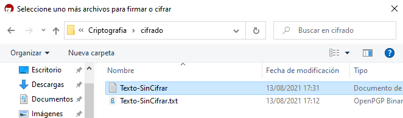 | 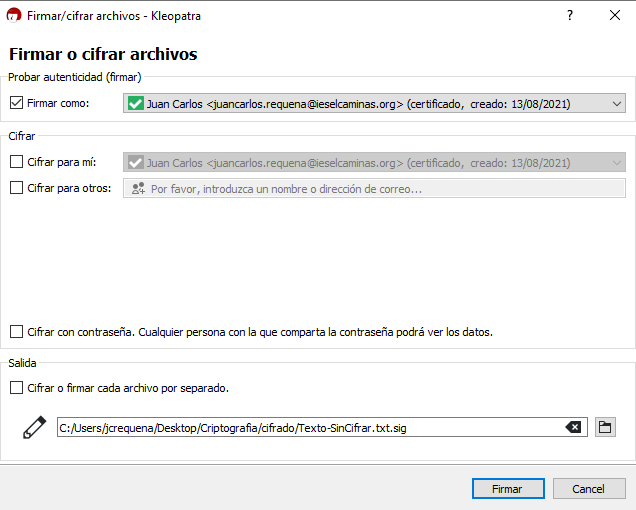 |
A continuación, hay que pulsar el botón Firmar. Nos solicitará la contraseña del usuario Juan Carlos (el que va a firmar el archivo).
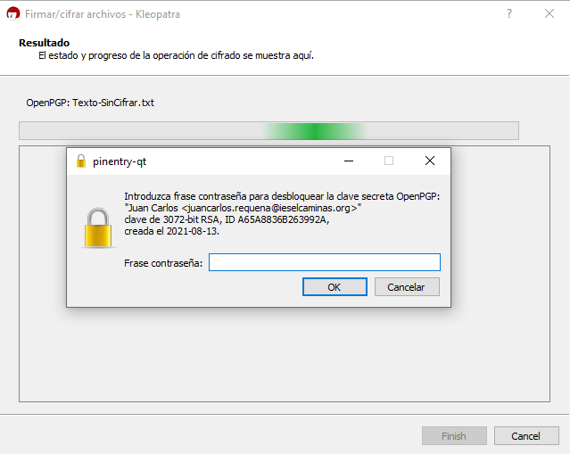
Al ingresar la contraseña y pulsar el botón 'Ok', si todo ha ido bien, nos aparece una nueva ventana donde nos indica que se ha firmado correctamente el fichero y además, genera el fichero Texto-SinCifrar.txt.sig (signature), ver imagen inferior-central.
| 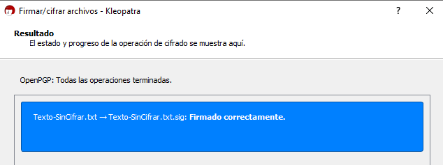 | 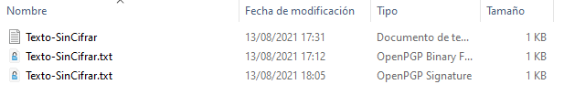 | 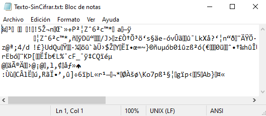 |
Una vez firmado el documento, podemos verificar la persona que ha realizado esa firma. Para ello, desde el menú, seleccionamos → Descifrar/Verificar y seleccionamos el fichero .sig.
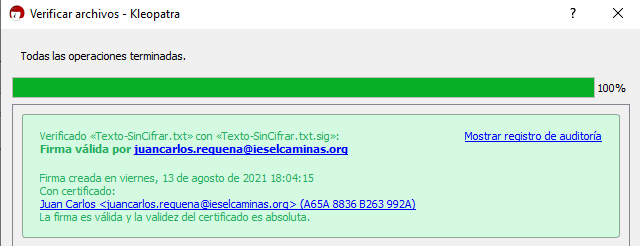
Importante: La firma lleva tiempo, es el día/hora de cuando se firmó. Si pulsamos en Mostrar el registro de auditoría (imagen inferior), podemos observar la fecha de la firma.
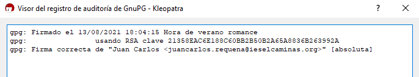
Obra publicada con Licencia Creative Commons Reconocimiento No comercial Compartir igual 4.0